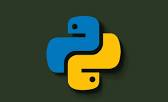

Python was created by Guido van Rossum, and first released on February 20, 1991. While you may know the python as a large snake, the name of the Python programming language comes from an old BBC television comedy sketch series called Monty Python's Flying Circus.
Guido van Rossum (Dutch: [ˈɣido vɑn ˈrɔsʏm, -səm]; born 31 January 1956) is a Dutch programmer. He is the creator of the Python programming language, for which he was the "benevolent dictator for life" (BDFL) until he stepped down from the position on 12 July 2018.[4][5] He remained a member of the Python Steering Council through 2019, and withdrew from nominations for the 2020 election.[6]an Rossum was born and raised in the Netherlands, where he received a master's degree in mathematics and computer science from the University of Amsterdam in 1982. He received a bronze medal in 1974 in the International Mathematical Olympiad.[7] He has a brother, Just van Rossum, who is a type designer and programmer who designed the typeface used in the "Python Powered" logo.[8] Van Rossum lives in Belmont, California, with his wife, Kim Knapp,[9] and their son.[10][11][12]

Van Rossum was born and raised in the Netherlands, where he received a master's degree in mathematics and computer science from the University of Amsterdam in 1982. He received a bronze medal in 1974 in the International Mathematical Olympiad.[7] He has a brother, Just van Rossum, who is a type designer and programmer who designed the typeface used in the "Python Powered" logo.[8] Van Rossum lives in Belmont, California, with his wife, Kim Knapp,[9] and their son.[10][11][12]
.jpg)
While working at the Centrum Wiskunde & Informatica (CWI), Van Rossum wrote and contributed a glob() routine to BSD Unix in 1986[13][14] and helped develop the ABC programming language. He once stated, "I try to mention ABC's influence because I'm indebted to everything I learned during that project and to the people who worked on it."[15] He also created Grail, an early web browser written in Python, and engaged in discussions about the HTML standard.[16] He has worked for various research institutes, including the Centrum Wiskunde & Informatica (CWI) in the Netherlands, the U.S. National Institute of Standards and Technology (NIST), and the Corporation for National Research Initiatives (CNRI). In May 2000, he left CNRI along with three other Python core developers to work for tech startup BeOpen.com, which subsequently collapsed by October of the same year.[17][18] From late 2000 until 2003 he worked for Zope Corporation. In 2003 Van Rossum left Zope for Elemental Security. While there he worked on a custom programming language for the organization.[19] Google From 2005 to December 2012, Van Rossum worked at Google, where he spent half of his time developing the Python language. At Google, he developed Mondrian, a web-based code review system written in Python and used within the company. He named the software after the Dutch painter Piet Mondrian.[20] He named Rietveld, another related software project, after Gerrit Rietveld, a Dutch designer.[21] On 7 December 2012, Van Rossum left Google.[22] Dropbox In January 2013, Van Rossum started working at the cloud file storage company Dropbox.[23][24] In October 2019, Van Rossum left Dropbox and officially retired.[25][26][27] Microsoft On 12 November 2020 Van Rossum announced that he was coming out of retirement to join the Developer Division at Microsoft. He currently holds the title Distinguished Engineer at Microsoft.[28][29][30]